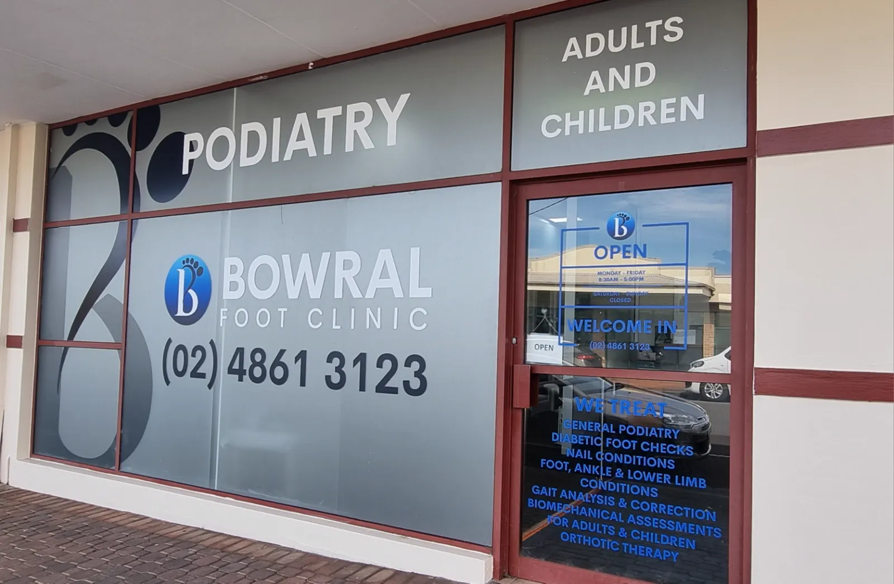

Welcome to
Bowral Foot Clinic
Whether you are looking to maintain your general foot health or are managing pain in the feet, ankles, knees, legs, or hips, our mission is to focus on prevention and early diagnosis to keep adults and children moving comfortably.


Not Your Average Podiatry Clinic
The Bowral Foot Clinic is a leading podiatry facility dedicated to serving the Bowral and Southern Highlands area for many years now. Opened initially in Mona Road and moving in recent years to Boolwey Street, our mission is to focus on prevention, early diagnosis and effective solutions to keep adults and children moving comfortably by providing expert care in general podiatry and lower limb biomechanics.
About the clinic ↗
Meet the Team
The Bowral Foot Clinic is committed to relieving your foot ailments effectively, efficiently, and comfortably no matter how small or complex the issue is.


Problems we treat
- Corns and Calluses
- Ingrown Toe Nails
- Fungal Nails
- Arthritis
- Ball of Foot Pain
- Plantar Warts
- Hammer Toes
- Plantar Fasciitis
- Achillies Tendinopathy
- Sever's Disease
- Osgood Schlatters Disease
- Pigeon Toe and Out Toe
- Heel Pain and Heel Spurs
- Cracked Heels and dry skin
- Knee Pain and Injuries
- Neuromas
- Hip Pain and Lower back pain
- Shin Pain
- Flat Feet
- Bunions
- Shin Splints
- High Arches
- Childrens Conditions
- Growing Pains in children

Range of services
The Bowral Foot Clinic offers expert podiatry care to treat a wide range of foot and leg concerns, simple to complex, with comfort, precision, and care.
- Biomechanical Assessments
- Gait Analysis
- Children's Podiatry
- Prolotherapy
- Diabetic Foot Assessment
- Dry Needling
- Strengthening and Stretching
- Shockwave Therapy
- Wart Treatment
- Foot Mobilisation Therapy
- General Podiatry and Foot Health
- Orthotic Therapy
- Injection Therapy
- Custom Orthotics
- Nail Cutting and Callus removal
- Ulcer care and wound treatment
Frequently asked questions
What Is A Podiatrist?
A Podiatrist is a doctor of Podiatric Medicine and is an expert in the foot, ankle and lower limb health.
Do I Need A Referral To See A Podiatrist?
No, you do not need a referral to see a podiatrist. You will only need a referral if you are with the Department of Veteran Affairs or Workers Compensation. The Bowral Foot Clinic does not Bulk Bill, but EPCs from your GP are happily accepted with gap payment.
Will My Private Health Insurance Cover Podiatry?
Yes, most private health insurance’s will cover some podiatry. It is important that you have checked your cover prior to the scheduled appointment as it may affect your rebate.
Visit us in Bowral
Opening hours
- Monday to Friday
- 8:30 am to 5:30 pm
- Saturday
- 8:30 am to 12 pm
- Sunday
- Closed